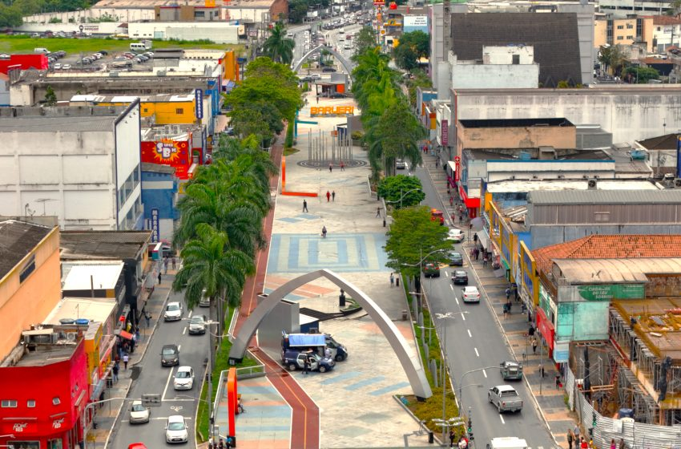

Barueri
Cidade dinâmica na região metropolitana, com forte presença de empresas e modernas zonas comerciais, além de
áreas verdes como o Parque Municipal Dom José.
Pontos Turísticos
- Parque Municipal Dom José (lazer e natureza)
- Teatro Municipal de Barueri (eventos culturais)
- Vivara Park (shopping e entretenimento)
- Tamboré Shopping Center (compras)
- Centro Cultural de Barueri (exposições e workshops)
